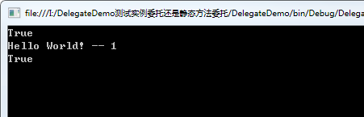

通过用什么类型的方法来声明为委托，可以分为两类：
1. 委托静态方法：把一个静态方法给委托
2. 委托实例方法：把一个实例对象的成员方法给委托
（这两个名字是博主取的，可能不是很专业只是为了好区分）
委托是将函数指针和实例对象打包在一起的类，它有两个重要的成员，一个用来保存实例对象，一个用来保存函数的指针。从源码中我们可以查看System.Delegate，如下：
1. 将会调用方法所在的对象
// _target is the object we will invoke on
[System.Security.SecurityCritical]
internal Object _target;2. 将会调用的方法指针
// _methodPtr is a pointer to the method we will invoke
// It could be a small thunk if this is a static or UM call
[System.Security.SecurityCritical]
internal IntPtr _methodPtr;另外，我们查看System.Delegate的属性，我们可以看到一个属性 Target
public Object Target
{
get
{
return GetTarget();
}
} 来看一下这个 GetTarget() 方法的功能
[System.Security.SecuritySafeCritical]
internal virtual Object GetTarget()
{
return (_methodPtrAux.IsNull()) ? _target : null;
}可以看到这边有一个字段 _methodPtrAux，这是一个IntPtr类型的指针，可以看到注释可以看出，当把一个静态方法给委托的时候，将会返回一个 null，如果是一个实例方法的时候，将会返回当前方法所在的实例对象（this）
// In the case of a static method passed to a delegate, this field stores
// whatever _methodPtr would have stored: and _methodPtr points to a
// small thunk which removes the "this" pointer before going on
// to _methodPtrAux.
[System.Security.SecurityCritical]
internal IntPtr _methodPtrAux;测试类 Test.cs：
public class Test
{
/// <summary>
/// 实例方法
/// </summary>
public void ShowHelloWorld1()
{
Console.WriteLine("Hello World! -- 1");
}
/// <summary>
/// 静态方法
/// </summary>
public static void ShowHelloWorld2()
{
Console.WriteLine("Hello World! -- 2");
}
}委托声明：
public delegate void ShowHelloWorldMethod();上端测试代码：
//声明测试对象
Test test = new Test();
//构造实例方法的委托
ShowHelloWorldMethod del = test.ShowHelloWorld1;
//判断一下Target是不是指向方法所在的对象
Console.WriteLine(del.Target is Test);//True
//调用一下
((Test)del.Target).ShowHelloWorld1();//Hello World! -- 1
//构造静态方法的委托
ShowHelloWorldMethod del2 = Test.ShowHelloWorld2;
//判断一下Target是不是null
Console.WriteLine(del2.Target == null);//true测试结果符合我们的预期：

如果委托的Target属性为null说明是静态方法的委托，如果委托的Target属性不为null说明是实例方法的委托。